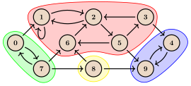
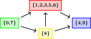

Thành phần liên thông mạnh và đồ thị co¶
Định nghĩa¶
Cho $G=(V,E)$ là một đồ thị có hướng với tập đỉnh $V$ và tập cạnh $E \subseteq V \times V$. Ký hiệu $n=|V|$ là số đỉnh và $m=|E|$ là số cạnh của $G$. Các định nghĩa trong bài có thể mở rộng dễ dàng cho đa đồ thị, nhưng ta sẽ không tập trung vào trường hợp đó.
Một tập đỉnh $C \subseteq V$ được gọi là một thành phần liên thông mạnh (strongly connected component, SCC) nếu thỏa mãn các điều kiện sau:
- với mọi $u,v\in C$, nếu $u \neq v$ thì tồn tại một đường đi từ $u$ tới $v$ và một đường đi từ $v$ tới $u$, và
- $C$ là tối đại, nghĩa là không thể thêm bất kỳ đỉnh nào mà vẫn giữ được điều kiện trên.
Ký hiệu $\text{SCC}(G)$ là tập các thành phần liên thông mạnh của $G$. Các thành phần liên thông mạnh này không giao nhau và phủ toàn bộ các đỉnh của đồ thị. Do đó, tập $\text{SCC}(G)$ tạo thành một phân hoạch của $V$.
Xét đồ thị $G_\text{example}$ sau, trong đó các thành phần liên thông mạnh được tô nổi bật:

Ta có $\text{SCC}(G_\text{example})=\{\{0,7\},\{1,2,3,5,6\},\{4,9\},\{8\}\}.$ Có thể kiểm tra rằng bên trong mỗi thành phần liên thông mạnh, mọi đỉnh đều đi tới được lẫn nhau.
Ta định nghĩa đồ thị co (condensation graph) $G^{\text{SCC}}=(V^{\text{SCC}}, E^{\text{SCC}})$ như sau:
- các đỉnh của $G^{\text{SCC}}$ chính là các thành phần liên thông mạnh của $G$; tức là $V^{\text{SCC}} = \text{SCC}(G)$, và
- với mọi đỉnh $C_i,C_j$ của đồ thị co, có một cạnh từ $C_i$ tới $C_j$ khi và chỉ khi $C_i \neq C_j$ và tồn tại $a\in C_i$, $b\in C_j$ sao cho trong $G$ có một cạnh từ $a$ tới $b$.
Đồ thị co của $G_\text{example}$ có dạng như sau:

Tính chất quan trọng nhất của đồ thị co là nó không có chu trình. Thật vậy, theo định nghĩa đồ thị co không có 'self-loop'; nếu tồn tại một chu trình đi qua hai hoặc nhiều đỉnh (tức các thành phần liên thông mạnh) trong đồ thị co, thì do tính đi tới được lẫn nhau, hợp của các thành phần liên thông mạnh đó phải tự tạo thành một thành phần liên thông mạnh: mâu thuẫn.
Thuật toán ở phần tiếp theo sẽ tìm tất cả các thành phần liên thông mạnh trong một đồ thị cho trước. Sau đó ta có thể xây dựng đồ thị co.
Thuật toán Kosaraju¶
Mô tả thuật toán¶
Thuật toán này được Kosaraju và Sharir đề xuất độc lập vào khoảng năm 1980. Nó dựa trên hai lượt tìm kiếm theo chiều sâu, với thời gian chạy $O(n + m)$.
Ở bước đầu tiên, ta thực hiện một chuỗi các lần tìm kiếm theo chiều sâu (dfs) để thăm toàn bộ đồ thị. Nghĩa là, miễn vẫn còn đỉnh chưa thăm, ta chọn một đỉnh như vậy và bắt đầu tìm kiếm theo chiều sâu từ đỉnh đó. Với mỗi đỉnh, ta lưu thời điểm thoát $t_\text{out}[v]$. Đây là 'timestamp' tại thời điểm lời gọi dfs trên đỉnh $v$ kết thúc, tức là lúc mọi đỉnh đi tới được từ $v$ đã được thăm và thuật toán quay trở lại $v$. Bộ đếm timestamp không được đặt lại giữa các lần gọi dfs liên tiếp. Thời điểm thoát đóng vai trò then chốt trong thuật toán, điều này sẽ rõ hơn qua định lý sau.
Trước hết, ta định nghĩa thời điểm thoát $t_\text{out}[C]$ của một thành phần liên thông mạnh $C$ là giá trị lớn nhất của $t_\text{out}[v]$ với mọi $v \in C.$ Ngoài ra, trong chứng minh định lý, ta sẽ dùng thời điểm vào $t_{\text{in}}[v]$ của mỗi đỉnh $v\in G$. Số $t_{\text{in}}[v]$ biểu diễn 'timestamp' tại thời điểm hàm đệ quy dfs được gọi trên đỉnh $v$ ở bước đầu tiên của thuật toán. Với một thành phần liên thông mạnh $C$, ta định nghĩa $t_{\text{in}}[C]$ là giá trị nhỏ nhất của $t_{\text{in}}[v]$ với mọi $v \in C$.
Định lý
Cho $C$ và $C'$ là hai thành phần liên thông mạnh khác nhau, và trong đồ thị co có một cạnh từ $C$ tới $C'$. Khi đó, $t_\text{out}[C] > t_\text{out}[C']$.
Chứng minh
Có hai trường hợp, tùy thành phần nào được tìm kiếm theo chiều sâu chạm tới trước:
-
Trường hợp 1: thành phần $C$ được chạm tới trước (tức là $t_{\text{in}}[C] < t_{\text{in}}[C']$). Khi đó, tại một thời điểm nào đó tìm kiếm theo chiều sâu thăm một đỉnh $v \in C$ trong lúc mọi đỉnh còn lại của hai thành phần $C$ và $C'$ đều chưa được thăm. Vì trong đồ thị co có cạnh từ $C$ tới $C'$, không chỉ mọi đỉnh còn lại trong $C$ đi tới được từ $v$ trong $G$, mà mọi đỉnh của $C'$ cũng đi tới được. Điều này có nghĩa là lời gọi
dfsđang chạy từ đỉnh $v$ sau đó sẽ thăm mọi đỉnh còn lại của hai thành phần $C$ và $C'$, nên các đỉnh đó sẽ là hậu duệ của $v$ trong cây tìm kiếm theo chiều sâu. Suy ra với mỗi đỉnh $u \in (C \cup C')\setminus \{v\},$ ta có $t_\text{out}[v] > t_\text{out}[u]$. Do đó, $t_\text{out}[C] > t_\text{out}[C']$, hoàn tất trường hợp này. -
Trường hợp 2: thành phần $C'$ được chạm tới trước (tức là $t_{\text{in}}[C] > t_{\text{in}}[C']$). Khi đó, tìm kiếm theo chiều sâu thăm một đỉnh $v \in C'$ tại thời điểm mọi đỉnh còn lại của hai thành phần $C$ và $C'$ đều chưa được thăm. Vì trong đồ thị co có một cạnh từ $C$ tới $C'$, và đồ thị co không có chu trình, nên từ $C'$ không thể đi tới $C$. Vì vậy lời gọi
dfsđang chạy từ đỉnh $v$ sẽ không chạm tới bất kỳ đỉnh nào của $C$, nhưng sẽ thăm toàn bộ các đỉnh của $C'$. Các đỉnh của $C$ sẽ được một lời gọidfskhác thăm sau đó trong bước này, nên quả thật $t_\text{out}[C] > t_\text{out}[C']$. Chứng minh hoàn tất.
Định lý vừa chứng minh rất quan trọng để tìm các thành phần liên thông mạnh. Nó cho biết mọi cạnh trong đồ thị co đều đi từ một thành phần có giá trị $t_\text{out}$ lớn hơn tới một thành phần có giá trị nhỏ hơn.
Nếu sắp xếp mọi đỉnh $v \in V$ theo thứ tự giảm dần của thời điểm thoát $t_\text{out}[v]$, thì đỉnh đầu tiên $u$ sẽ thuộc thành phần liên thông mạnh "gốc", tức thành phần không có cạnh đi vào trong đồ thị co. Bây giờ ta muốn chạy một kiểu tìm kiếm từ đỉnh $u$ sao cho chỉ thăm toàn bộ các đỉnh trong thành phần liên thông mạnh của nó, không thăm các đỉnh khác. Bằng cách lặp lại thao tác này, ta có thể lần lượt tìm tất cả các thành phần liên thông mạnh: loại bỏ mọi đỉnh thuộc thành phần đầu tiên vừa tìm được, chọn đỉnh còn lại có $t_\text{out}$ lớn nhất, chạy tìm kiếm từ đó, v.v. Cuối cùng, ta sẽ tìm được tất cả các thành phần liên thông mạnh. Để có một phép tìm kiếm hoạt động như mong muốn, xét định lý sau:
Định lý
Gọi $G^T$ là đồ thị chuyển vị của $G$, thu được bằng cách đảo chiều tất cả các cạnh của $G$. Khi đó, $\text{SCC}(G)=\text{SCC}(G^T)$. Hơn nữa, đồ thị co của $G^T$ là đồ thị chuyển vị của đồ thị co của $G$.
Chứng minh được lược bỏ (nhưng khá trực tiếp). Theo hệ quả của định lý này, trong đồ thị co của $G^T$ sẽ không có cạnh nào đi từ thành phần "gốc" sang các thành phần khác. Vì vậy, để thăm toàn bộ thành phần liên thông mạnh "gốc" chứa đỉnh $v$, ta chỉ cần chạy tìm kiếm theo chiều sâu từ đỉnh $v$ trên đồ thị chuyển vị $G^T$! Phép tìm kiếm này sẽ thăm chính xác tất cả các đỉnh của thành phần liên thông mạnh đó. Như đã nói ở trên, ta có thể loại các đỉnh này khỏi đồ thị, rồi tìm đỉnh tiếp theo có giá trị $t_\text{out}[v]$ lớn nhất và chạy tìm kiếm trên đồ thị chuyển vị từ đỉnh đó để tìm thành phần liên thông mạnh kế tiếp. Lặp lại quá trình này, ta tìm được tất cả các thành phần liên thông mạnh.
Tóm lại, thuật toán tìm các thành phần liên thông mạnh gồm các bước sau:
-
Bước 1. Chạy một chuỗi tìm kiếm theo chiều sâu trên $G$, thu được một danh sách (chẳng hạn
order) các đỉnh được sắp theo thứ tự tăng dần của thời điểm thoát $t_\text{out}$. -
Bước 2. Xây dựng đồ thị chuyển vị $G^T$, rồi chạy một chuỗi tìm kiếm theo chiều sâu theo thứ tự ngược của các đỉnh (tức là theo thứ tự giảm dần của thời điểm thoát). Mỗi lần tìm kiếm theo chiều sâu sẽ cho ra một thành phần liên thông mạnh.
-
Bước 3 (không bắt buộc). Xây dựng đồ thị co.
Độ phức tạp thời gian của thuật toán là $O(n + m)$ vì tìm kiếm theo chiều sâu được thực hiện hai lần. Việc xây dựng đồ thị co cũng có độ phức tạp $O(n+m).$
Cuối cùng, cần nhắc tới sắp xếp tô-pô. Ở bước 1, ta tìm các đỉnh theo thứ tự tăng dần của thời điểm thoát. Nếu $G$ không có chu trình, thứ tự này tương ứng với một thứ tự tô-pô đảo ngược của $G$. Ở bước 2, thuật toán tìm các thành phần liên thông mạnh theo thứ tự giảm dần của thời điểm thoát. Do đó, các thành phần — tức các đỉnh của đồ thị co — được tìm theo một thứ tự tương ứng với thứ tự tô-pô của đồ thị co.
Cài đặt¶
vector<bool> visited; // keeps track of which vertices are already visited
// runs depth first search starting at vertex v.
// each visited vertex is appended to the output vector when dfs leaves it.
void dfs(int v, vector<vector<int>> const& adj, vector<int> &output) {
visited[v] = true;
for (auto u : adj[v])
if (!visited[u])
dfs(u, adj, output);
output.push_back(v);
}
// input: adj -- adjacency list of G
// output: components -- the strongy connected components in G
// output: adj_cond -- adjacency list of G^SCC (by root vertices)
void strongly_connected_components(vector<vector<int>> const& adj,
vector<vector<int>> &components,
vector<vector<int>> &adj_cond) {
int n = adj.size();
components.clear(), adj_cond.clear();
vector<int> order; // will be a sorted list of G's vertices by exit time
visited.assign(n, false);
// first series of depth first searches
for (int i = 0; i < n; i++)
if (!visited[i])
dfs(i, adj, order);
// create adjacency list of G^T
vector<vector<int>> adj_rev(n);
for (int v = 0; v < n; v++)
for (int u : adj[v])
adj_rev[u].push_back(v);
visited.assign(n, false);
reverse(order.begin(), order.end());
vector<int> roots(n, 0); // gives the root vertex of a vertex's SCC
// second series of depth first searches
for (auto v : order)
if (!visited[v]) {
std::vector<int> component;
dfs(v, adj_rev, component);
components.push_back(component);
int root = *component.begin();
for (auto u : component)
roots[u] = root;
}
// add edges to condensation graph
adj_cond.assign(n, {});
for (int v = 0; v < n; v++)
for (auto u : adj[v])
if (roots[v] != roots[u])
adj_cond[roots[v]].push_back(roots[u]);
}
Hàm dfs cài đặt tìm kiếm theo chiều sâu. Hàm nhận vào một danh sách kề và một đỉnh bắt đầu. Nó cũng nhận tham chiếu tới vector output: mỗi đỉnh được thăm sẽ được thêm vào output khi dfs rời khỏi đỉnh đó.
Lưu ý rằng ta dùng hàm dfs ở cả bước thứ nhất lẫn bước thứ hai của thuật toán. Ở bước thứ nhất, ta truyền vào danh sách kề của $G$; qua các lần gọi dfs liên tiếp, ta tiếp tục dùng cùng một 'output vector' order, để cuối cùng thu được danh sách các đỉnh theo thứ tự tăng dần của thời điểm thoát. Ở bước thứ hai, ta truyền vào danh sách kề của $G^T$; trong mỗi lần gọi, ta truyền một 'output vector' rỗng component, từ đó nhận được từng thành phần liên thông mạnh một.
Thuật toán Tarjan tìm thành phần liên thông mạnh¶
Mô tả thuật toán¶
Thuật toán này được Tarjan đề xuất lần đầu vào năm 1972. Nó dựa trên một chuỗi lời gọi DFS, tận dụng thông tin có sẵn trong cấu trúc của quá trình DFS để xác định các thành phần liên thông mạnh (SCC), với thời gian chạy $O(n+m)$.
Khi áp dụng DFS trên một đỉnh, ta duyệt danh sách kề của nó; nếu gặp một đỉnh chưa được thăm thì đệ quy gọi DFS trên đỉnh đó.
Xét cây được tạo ra bởi chuỗi lời gọi DFS, ta gọi nó là cây DFS. Khi lần đầu gọi DFS trên một đỉnh thuộc một SCC, mọi đỉnh của SCC đó sẽ được thăm trước khi lời gọi này kết thúc, vì các đỉnh trong SCC đều đi tới được lẫn nhau. Trong cây DFS, đỉnh đầu tiên này sẽ là tổ tiên chung của mọi đỉnh còn lại trong SCC; ta gọi nó là gốc của SCC.
Định lý
Tất cả các đỉnh của một SCC tạo ra một đồ thị con liên thông của cây DFS.
Chứng minh
Ta đã xác định rằng mọi đỉnh của một SCC có một tổ tiên chung là đỉnh đầu tiên được một lời gọi DFS thăm. Xét một đỉnh $v$ và gốc của nó là đỉnh $r$. Mọi đỉnh trên đường đi từ $r$ tới $v$ đều thuộc cùng một SCC. Tất cả các đỉnh này đều đi tới được từ $r$, và tất cả đều đi tới $v$; theo định nghĩa $v$ đi tới được $r$, nên mọi đỉnh này đi tới được lẫn nhau. Vì mọi đường đi từ gốc tới mỗi đỉnh khác của SCC đều nằm trong cùng SCC, đồ thị con tạo bởi các đỉnh đó là liên thông.
Lưu ý rằng các SCC chia cây DFS thành các đồ thị con liên thông rời nhau một cách chính xác.
Ý tưởng của thuật toán như sau:
-
Ta thực hiện một chuỗi lời gọi DFS, đệ quy gọi tiếp trên các đỉnh trong danh sách kề.
-
Khi duyệt xong danh sách kề của một đỉnh, bằng một cách nào đó ta xác định được đỉnh đó có phải gốc hay không. Cách xác định sẽ được giải thích sau.
-
Nếu đỉnh là gốc, ta lập tức tìm và đánh dấu tất cả các đỉnh thuộc SCC của nó.
Khi mọi lời gọi kết thúc, tất cả các gốc đã được phát hiện và mọi đỉnh đã được gán vào một SCC nào đó.
Bây giờ xét các tính chất của DFS khi thêm quá trình gán đỉnh vào SCC.
Định lý
Xét đỉnh $v$ ngay sau khi ta vừa duyệt xong danh sách kề của nó. Tất cả các đỉnh chưa được gán trong cây con của nó thuộc cùng một SCC.
Chứng minh
Thuật toán sẽ gán các đỉnh của một SCC khi tìm thấy gốc của SCC đó. Vì danh sách kề của $v$ đã được duyệt xong, mọi lời gọi DFS trong cây con của nó đều đã kết thúc; các gốc đã được phát hiện và các đỉnh thuộc SCC tương ứng đã được gán. Gốc của những đỉnh chưa được gán còn lại sẽ là một tổ tiên mà quá trình gán chưa được thực hiện, nên đó là $v$ hoặc một tổ tiên của $v$. Vì $v$ nằm trên đường đi từ mọi đỉnh tới gốc của chúng và các SCC phải tạo thành đồ thị con liên thông của cây, nên cả $v$ lẫn mọi đỉnh còn lại đều thuộc cùng một SCC.
Định lý
Xét đỉnh $v$ và giả sử ta đang duyệt danh sách kề của nó, hiện tại xử lý cạnh $(v, u)$. Nếu $u$ đã được một lời gọi DFS nào đó thăm và vẫn chưa được gán, thì $v$ và $u$ thuộc cùng một SCC.
Chứng minh
Có các trường hợp khác nhau tùy loại cạnh:
-
Cạnh cây: nếu đây là một cạnh cây, đây là lần đầu tiên ta gặp đỉnh $u$. Nghĩa là trước hết ta phải đệ quy gọi DFS trên $u$ và chỉ xét nó sau khi lời gọi DFS đó kết thúc. Nếu đỉnh $u$ vẫn chưa được gán, gốc của nó là $v$ hoặc một tổ tiên của $v$, nên chúng phải thuộc cùng một SCC.
-
Cạnh ngược: đây là trường hợp đơn giản nhất; nếu $u$ là tổ tiên của $v$, chúng đi tới được lẫn nhau và theo định nghĩa thuộc cùng một SCC.
-
Cạnh xuôi: trước khi cạnh này được xử lý, đã có một chuỗi lời gọi DFS kết thúc mà không tìm thấy gốc của $u$, sau đó quay về $v$ và lời gọi DFS của $v$ tiếp tục. Khi đó gốc của $u$ là một tổ tiên mà quá trình gán chưa được thực hiện, nên nó là $v$ hoặc một tổ tiên của $v$; do đó chúng phải thuộc cùng một SCC.
-
Cạnh chéo: tương tự, trước khi cạnh này được xử lý, đã có một chuỗi lời gọi DFS kết thúc mà không tìm thấy gốc của $u$, sau đó quay về một tổ tiên chung của $u$ và $v$; lời gọi DFS của tổ tiên này tiếp tục và bắt đầu một chuỗi lời gọi DFS mới dẫn tới lời gọi trên $v$. Khi đó gốc của $u$ là một tổ tiên mà quá trình gán chưa được thực hiện, và mọi ứng viên có thể đều là tổ tiên chung với $v$. Vì gốc của $u$ là tổ tiên của $v$, nó đi tới được $v$; và vì lúc này $v$ đi tới được $u$, chúng phải thuộc cùng một SCC.
Lưu ý rằng khi hai đỉnh thuộc cùng một thành phần, gốc của chúng phải là một tổ tiên chung của cả hai.
Định lý
Cho $v$ là một đỉnh. Hai mệnh đề sau tương đương:
- Có một đỉnh trong cây con của $v$ đi tới một đỉnh chưa được gán nằm ngoài cây con.
- $v$ không phải là gốc của một SCC.
Chứng minh
-
$1. \implies 2.$: Giả sử một đỉnh $u$ trong cây con của $v$ đi tới một đỉnh chưa được gán $w$ nằm ngoài cây con. Ta đã chứng minh rằng $u$ và $w$ thuộc cùng một SCC và gốc của chúng phải là tổ tiên chung của cả hai. Tổ tiên chung này nhất thiết nằm ngoài cây con và cũng là tổ tiên của $v$. Vì $v$ nằm trên đường đi từ gốc tới $u$, nó phải thuộc cùng SCC, mà gốc của SCC đó không phải là $v$.
-
$\neg 1. \implies \neg 2.$: Giả sử không có đỉnh nào trong cây con của $v$ đi tới một đỉnh chưa được gán nằm ngoài cây con. Điều này có nghĩa là không có đỉnh nào trong cây con của $v$ đi tới một tổ tiên của $v$. Các cạnh duy nhất có thể đi tới đỉnh ngoài cây con là các cạnh chéo tới những đỉnh đã được gán; những đỉnh này không thể đi tới một tổ tiên của $v$, vì nếu có thì chúng sẽ thuộc cùng SCC với $v$, điều không thể xảy ra do SCC của chúng đã được xác định. Vì không thể đi tới bất kỳ tổ tiên nào của $v$ từ cây con của nó, gốc của $v$ phải chính là $v$.
Bây giờ ta cần tìm cách xác định một đỉnh có phải gốc hay không; các tính chất của quá trình gán ở trên là cơ sở cho tính đúng đắn. Để làm điều đó, ta định nghĩa thời điểm vào $t_{in}[v]$ cho mỗi đỉnh $v \in G$, tương ứng với 'timestamp' tại thời điểm DFS được gọi trên $v$. Theo định nghĩa, gốc là đỉnh đầu tiên của một SCC được DFS thăm, vì vậy nó có giá trị $t_{in}$ nhỏ nhất trong SCC.
Cho $v$ là một đỉnh và xét cây con của nó. Tại thời điểm vừa duyệt xong danh sách kề, mọi đỉnh đã được một lời gọi DFS thăm ở ngoài cây con đều có giá trị $t_{in}$ nhỏ hơn, vì DFS đã được gọi trên chúng trước khi bắt đầu trên $v$.
Khi xét quá trình gán, giá trị $t_{in}$ của mọi đỉnh chưa được gán nằm ngoài cây con của $v$ đều nhỏ hơn $t_{in}[v]$. Bây giờ ta có thể thấy cách dùng $t_{in}$ để xác định gốc. Ta xét giá trị $t_{in}$ nhỏ nhất trong các đỉnh chưa được gán mà ta có thể đi tới và lan truyền thông tin này lên các tổ tiên thông qua cạnh cây. Ta gọi giá trị được lan truyền là $t_{low}$.
Cụ thể hơn, ta định nghĩa $t_{low}[v]$ là giá trị $t_{in}$ nhỏ nhất của một đỉnh chưa được gán mà một đỉnh trong cây con của $v$ có thể đi tới bằng một cạnh trực tiếp. Vì vậy, ta có thể phát hiện đỉnh $v$ có phải gốc hay không bằng cách kiểm tra $t_{low}[v] < t_{in}[v]$.
Cuối cùng, để gán các đỉnh vào SCC, có nhiều cách thực hiện, chẳng hạn dùng một thuật toán duyệt đồ thị khác; nhưng ta cũng có thể dùng một cấu trúc dữ liệu đơn giản để theo dõi các đỉnh chưa được gán. Để suy ra cấu trúc dữ liệu từ các thao tác cần thiết, ta chỉ cần hai thao tác:
-
Khi lần đầu thăm một đỉnh, chỉ cần chèn nó vào cấu trúc dữ liệu vì đỉnh này chưa được gán.
-
Khi tìm thấy một gốc, ta phải tìm tất cả các đỉnh chưa được gán còn lại trong cây con của nó và xóa chúng khỏi cấu trúc dữ liệu.
Có thể mô tả thao tác xóa theo một cách khác bằng nhận xét rằng ngay sau khi duyệt xong danh sách kề của một đỉnh $v$, mọi đỉnh được đưa vào cấu trúc dữ liệu sau $v$ đều nằm trong cây con của nó. Nếu $v$ là một gốc, mọi đỉnh còn lại được chèn sau $v$ đều phải bị xóa. Vì vậy thao tác xóa có thể được mô tả lại như sau:
- Khi tìm thấy một gốc, ta phải tìm và xóa tất cả các đỉnh còn lại được chèn sau nó.
Ta thấy rằng có thể cài đặt việc này bằng một ngăn xếp:
-
Khi lần đầu thăm một đỉnh, ta đẩy nó vào ngăn xếp.
-
Khi tìm thấy một gốc, ta lấy các phần tử khỏi ngăn xếp cho đến khi lấy chính gốc ra.
Như vậy ta đã có đủ để cài đặt thuật toán.
Độ phức tạp thời gian của chuỗi lời gọi DFS là $O(n + m)$. Với ngăn xếp, tổng độ phức tạp khấu hao là $O(n)$ vì mỗi đỉnh chỉ được đẩy vào và lấy ra đúng một lần. Do đó tổng độ phức tạp thời gian là $O(n + m)$.
Một nhận xét thêm là các gốc được tìm theo thứ tự tô-pô đảo ngược. Trong thuật toán, một đỉnh là gốc nếu không có cạnh nào tới một đỉnh chưa được gán nằm ngoài cây con của nó. Điều đó có nghĩa là mọi thành phần khác đi tới được đều hoặc nằm trong cây con (nên gốc của chúng đã được tìm), hoặc nối tới các đỉnh đã được gán ở ngoài cây con (gốc của các thành phần đó cũng đã được tìm). Vì vậy mọi thành phần đi tới được đều đã được tìm trước, nghĩa là chúng xuất hiện theo một thứ tự tô-pô đảo ngược hợp lệ của đồ thị co.
Cài đặt¶
vector<int> st; // - stack holding the unclaimed vertices
vector<int> roots; // - keeps track of the SCC roots of the vertices
int timer; // - dfs timestamp counter
vector<int> t_in; // - keeps track of the dfs timestamp of the vertices
vector<int> t_low; // - keeps track of the lowest t_in of unclaimed vertices
// reachable in the subtree
// implements the tarjan algorithm for strongly connected components
void dfs(int v, vector<vector<int>> const &adj, vector<vector<int>> &components) {
t_low[v] = t_in[v] = timer++;
st.push_back(v);
for (auto u : adj[v]) {
if (t_in[u] == -1) { // tree-edge
dfs(u, adj, components);
t_low[v] = min(t_low[v], t_low[u]);
} else if (roots[u] == -1) { // back-edge, cross-edge or forward-edge to an unclaimed vertex
t_low[v] = min(t_low[v], t_in[u]);
}
}
if (t_low[v] == t_in[v]) { // vertex is a root
components.push_back({v}); // initializes a new component with root v
while (true) {
int u = st.back();
st.pop_back();
roots[u] = v; // claims the vertex
if (u == v)
break;
components.back().push_back(u); // adds vertex u to the component of v
}
}
}
// input: adj -- adjacency list of G
// output: components -- the strongy connected components in G
// output: adj_cond -- adjacency list of G^SCC (by root vertices)
void strongly_connected_components(vector<vector<int>> const &adj,
vector<vector<int>> &components,
vector<vector<int>> &adj_cond) {
components.clear();
adj_cond.clear();
int n = adj.size();
st.clear();
roots.assign(n, -1);
timer = 0;
t_in.assign(n, -1);
t_low.assign(n, -1);
// applies the tarjan algorithm to all the vertices
// adds vertices to the components in reverse topological order
for (int v = 0; v < n; v++) {
if (t_in[v] == -1) {
dfs(v, adj, components);
}
}
// adds edges to the condensation graph
adj_cond.assign(n, {});
for (int v = 0; v < n; v++) {
for (auto u : adj[v])
if (roots[v] != roots[u])
adj_cond[roots[v]].push_back(roots[u]);
}
}
Ta có một bài nộp được chấp nhận sử dụng code này trên Library Checker.
Nhận xét cuối cùng: có một cách khác để duyệt danh sách kề. Hiện tại ta đang làm như sau:
for (auto u : adj[v]) {
if (t_in[u] == -1) { // tree-edge
dfs(u, adj);
t_low[v] = min(t_low[v], t_low[u]);
} else if (roots[u] == -1) { // back-edge, cross-edge or forward-edge to an unclaimed vertex
t_low[v] = min(t_low[v], t_in[u]);
}
}
Một cách khác là:
for (auto u : adj[v]) {
if (t_in[u] == -1) // vertex is not visited
dfs(u, adj);
if (roots[u] == -1) // vertex has not been claimed
t_low[v] = min(t_low[v], t_low[u]);
}
$t_{low}$ được dùng để lan truyền thông tin tới gốc; khi thực hiện t_low[v] = min(t_low[v], t_in[u]), ta biết rằng $u$ và $v$ thuộc cùng một SCC.
Nếu $t_{low}[u]$ được lan truyền tới gốc của $u$, nó cũng có thể được lan truyền qua $v$ vì hai đỉnh có cùng gốc.
Do $t_{low}[u] \leq t_{in}[u]$, việc này không tạo ra mâu thuẫn mà chỉ cải thiện cận đối với gốc của $v$.
Xây dựng đồ thị co¶
Khi xây dựng danh sách kề của đồ thị co, ta chọn gốc của mỗi thành phần là đỉnh đầu tiên trong danh sách đỉnh của thành phần đó (đây chỉ là một lựa chọn tùy ý). Đỉnh gốc này đại diện cho toàn bộ SCC. Với mỗi đỉnh v, giá trị roots[v] cho biết đỉnh gốc của SCC chứa v.
Lúc này các đỉnh của đồ thị co được biểu diễn bởi components (mỗi thành phần liên thông mạnh tương ứng với một đỉnh trong đồ thị co), còn danh sách kề là adj_cond, chỉ sử dụng các đỉnh gốc của các thành phần liên thông mạnh. Lưu ý rằng ta sinh một cạnh từ $C$ tới $C'$ trong $G^\text{SCC}$ cho mỗi cạnh từ một $a\in C$ tới một $b\in C'$ trong $G$ (nếu $C\neq C'$). Do đó trong cài đặt này có thể tồn tại nhiều cạnh giữa cùng hai thành phần trong đồ thị co.
Tài liệu tham khảo¶
- Thomas Cormen, Charles Leiserson, Ronald Rivest, Clifford Stein. Introduction to Algorithms [2005].
- M. Sharir. A strong-connectivity algorithm and its applications in data-flow analysis [1979].
- Robert Tarjan. Depth-first search and linear graph algorithms [1972].
Bài tập luyện tập¶
- SPOJ - Good Travels
- SPOJ - Lego
- Codechef - Chef and Round Run
- UVA - 11838 - Come and Go
- UVA 247 - Calling Circles
- UVA 13057 - Prove Them All
- UVA 12645 - Water Supply
- UVA 11770 - Lighting Away
- UVA 12926 - Trouble in Terrorist Town
- UVA 11324 - The Largest Clique
- UVA 11709 - Trust groups
- UVA 12745 - Wishmaster
- SPOJ - True Friends
- SPOJ - Capital City
- Codeforces - Scheme
- SPOJ - Ada and Panels
- CSES - Flight Routes Check
- CSES - Planets and Kingdoms
- CSES - Coin Collector
- Codeforces - Checkposts